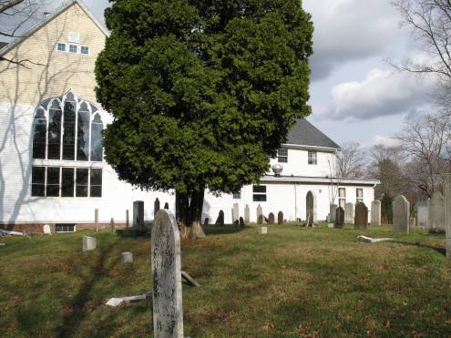

|
|
|
| Methodist
Cemetery Seymour, New Haven, CT |
|||
|
 |
|
|
 |
NAME |
|
AGE |
|
1934 |
|
Bassett,
Henry - son of Jared & Sarah Brewster (Johnson) |
25
Sep 1862 |
38 |
PHOTO | 1934 |
| Bassett, Jared - son of Abraham & Mary (Baldwin) | 16
May 1869 |
77 |
PHOTO | 1934 | |
| Bassett,
Sarah Brewster (Johnson) -
wife of Jared |
12
Jun 1878 |
79 |
PHOTO | 1934 | |
| Beach,
Hannah Betsey (Johnson) - wife
of David |
9
Oct 1822 |
20 |
PHOTO | 1934 | |
| Benedict,
Harriet - wife of W. F. |
31
Jan 1865 |
24 |
PHOTO | 1934 | |
| Benham,
Elizabeth - wife of Charles |
2
Jun 1822 |
27 |
PHOTO | 1934 | |
| Berry,
Lucy Melissa - daughter of Oloff & Lucy |
6
Jul 1813 |
2 |
PHOTO | 1934 | |
| Booth,
Anna - wife of Ebenezer |
17
Nov 1867 |
88 |
1934 | ||
| Buckingham,
Mary A. (Gilyard) - wife of
Henry |
30
Mar 1877 |
35 |
1934 | ||
| Butler,
Ann D. |
23
Feb 1875 |
71 |
PHOTO | 1934 | |
| Butler, John - son of Ann D. | 21
Nov 1875 |
32 |
PHOTO | 1934 | |
| Church,
Lois (Pitcher) - wife of
William and widow of Ebenezer Johnson |
16
Oct 1819 |
64 |
PHOTO | 1934 | |
| Collins,
Barsheba |
28
Mar 1807 |
1934 | |||
| Crowford,
Sarah - wife of John |
17
Apr 1794 |
54 |
PHOTO | 1934 | |
| Crowther,
Charlie - son of John & Hattie |
27
Jul 1883 |
1m |
1934 | ||
| Crowther,
George H. - son of Joseph W. & Sarah J. |
PHOTO | ||||
|
Crowther, Joseph W. | 17
Jul 1925 |
92 |
PHOTO | 1934 |
| Crowther,
Mary J. (Hedden) - wife of
Joseph W. |
30
Aug 1901 |
68 |
PHOTO | 1934 | |
| Culver,
John Wesley - son of William & Charity |
4
Sep 1855 |
7 |
PHOTO | 1934 | |
| Davis, Hubert - son of Alva & Sally (Johnson) | 21
Jun 1843 |
3 |
1934 | ||
| Davis, Polly (Holbrook) - wife of Alva | 28
Jan 1833 |
35 |
PHOTO | 1934 | |
| French,
Harriet (Hickcox) - wife of
John Wesley |
16
Oct 1837 |
27 |
PHOTO | 1934 | |
| French,
Washington - son of Walter & Laura |
14 Sep 1821 | 1m | PHOTO | 1934 | |
| French,
William |
31
Jul 1823 |
19 |
1934 | ||
| Gilbert,
Lydia |
11
Aug 1854 |
69 |
PHOTO | 1934 | |
| Gilyard,
Anna |
11
Jan 1821 |
61 |
PHOTO | 1934 | |
| Gilyard, Joseph - son of Thomas & Lois (French) | 6 Sep 1818 | 2m |
|
1934 | |
| Gilyard, Lois (French) - wife of Thomas | 6
Feb 1859 |
81 |
PHOTO | 1934 | |
| Gilyard, Thomas - son of Anna | 12
Nov 1853 |
67 |
PHOTO | 1934 | |
| Gilyard, Thomas - son of Thomas & Lois (French) | 18
Sep 1829 |
15 |
1934 | ||
| Gilyard,
Wealthy Ann (Hotchkiss) - wife
of William F. |
9
May 1891 |
75 |
PHOTO | 1934 | |
| Gilyard, William F. - son of Thomas & Lois (French) | 7
Feb 1884 |
69 |
PHOTO | 1934 | |
| Hickcox, Elizabeth D. (Spencer) - wife of Samuel | 9
Dec 1841 |
26 |
PHOTO | 1934 | |
| Hickcox,
Reverend Samuel L. |
14
Mar 1861 |
71 |
PHOTO | 1934 | |
| Hickcox, Samuel | 19
Dec 1880 |
66 |
PHOTO | 1934 | |
| Hickcox, Sarah (Osborn) - wife of Reverend Samuel L. | 26
Jan 1868 |
78 |
PHOTO | 1934 | |
|
Holbrook,
Captain Daniel - son of Deacon Daniel & Ann (Hitchcock) |
28
Sep 1828 |
59 |
PHOTO | 1934 |
| Holbrook, Elizabeth Ann (Riggs) - 1st wife of Captain Daniel | 9
Feb 1801 |
31 |
PHOTO | 1934 | |
| Holbrook, Harriet Emily - daughter of Harry & Nancy (Davis) | 29
Aug 1828 |
3 |
PHOTO | 1934 | |
| Holbrook, Harry - son of Captain Daniel & Elizabeth Ann (Riggs) | 29
Sep 1828 |
32 |
PHOTO | 1934 | |
| Holbrook, Lois - 2nd wife of Captain Daniel | 10
Mar 1827 |
63 |
PHOTO | 1934 | |
| Holbrook,
Nancy M. - daughter of Harry & Nancy (Davis) |
23
Sep 1828 |
9 |
PHOTO | 1934 | |
| Holbrook, Willis - son of Captain Daniel & Elizabeth Ann (Riggs) | 30
Sep 1790 |
6m |
PHOTO | 1934 | |
| Hubbell, Emily (Ils) - wife of Sidney A. | 16
Jan 1881 |
50 |
PHOTO | 1934 | |
|
Hubbell,
Sidney A. |
27
Apr 1897 |
66 |
PHOTO | 1934 |
| Johnson, Chauncey - son of Isaac & Lois (Hopkins) | 26
Dec 1814 |
38 |
PHOTO | 1934 | |
| Johnson,
Ebenezer - son of Ebenezer & Thankful (Upson) |
25
Sep 1792 |
32 |
PHOTO | 1934 | |
| Johnson, Hepzebaty (French) - wife of Reverend Jesse | 13
Apr 1823 |
1934 | |||
|
Johnson,
Isaac - son of Benaja & Sarah Ludlow (Brewster) |
10
Apr 1813 |
78 |
PHOTO | 1934 |
| Johnson, Reverend Jesse - son of Isaac & Lois (Hopkins) | 21
Oct 1829 |
56 |
PHOTO | 1934 | |
| Johnson, Jesse - son of Reverend Jesse & Hepzebaty (French) | 1934 | ||||
| Johnson,
Lois (Hopkins) - wife of Isaac |
16
Oct 1814 |
76 |
PHOTO | 1934 | |
| Johnson, Lois Amelia - daughter of Chauncey & Ruth (Tomlinson) | 25
Aug 1804 |
2 |
PHOTO | 1934 | |
| Johnson,
Ruth (Tomlinson) - wife of
Chauncey |
9
Mar 1807 |
27 |
PHOTO | 1934 | |
| Johnson, Stiles - son of Isaac & Lois (Hopkins) | 4
Oct 1818 |
37 |
PHOTO | 1934 | |
| Kirtland,
Elijah - son of George & Harriet (Wooster) |
24
May 1831 |
13 |
PHOTO | 1934 | |
| Kirtland,
George |
30
May 1872 |
78 |
PHOTO | 1934 | |
|
Lounsbury,
Albert W. |
23
Nov 1898 |
72 |
PHOTO | 1934 |
| Lounsbury,
Olive Maria (Sharpe) - wife of
Albert W. |
10
Mar 1912 |
85 |
PHOTO | 1934 | |
| Moshier,
Anna Maria - daughter of John H. & Rebecca L. (Northrop) |
14
Nov 1851 |
2 |
PHOTO | 1934 | |
| Osborn,
Ella Isabel - daughter of Charles L. & Vilette Lagrange (Smith) |
6
Aug 1856 |
5 |
PHOTO | 1934 | |
| Osborn,
Vilette Lagrange (Smith) -
wife of Charles L. |
27
Apr 1854 |
26 |
PHOTO | 1934 | |
| Page,
Rebeckah - daughter of Edmund & Sarah |
5
Oct 1795 |
2 |
PHOTO | 1934 | |
| Page, Sarah - daughter of Edmund & Sarah | 22
Nov 1798 |
7 |
PHOTO | 1934 | |
| Riggs,
Betsey Grace (Holbrook) - wife
of Moses |
11
Sep 1828 |
40 |
PHOTO | 1934 | |
| Sackett, Mary Ann | 8
Nov 1906 |
90 |
PHOTO | 1934 | |
| Sharp, Lugrand - son of Thomas & Mary (Treadwell) | 1
May 1876 |
78 |
PHOTO | 1934 | |
| Sharpe, Charles - son of Thomas & Charlotte I. (McLean) | 16
Feb 1874 |
8d |
PHOTO | 1934 | |
| Sharpe,
C. W. |
1880 |
49 |
PHOTO | 1934 | |
| Sharpe, Olive Maria (Booth) - wife of Lugrand | 1
May 1876 |
78 |
PHOTO | 1934 | |
| Slocum,
infant son of Fich & Lucy |
19
Sep 1815 |
PHOTO | 1934 | ||
| Smith, Edward Benson - son of Reverend Sylvester & Henrietta (Cadwell) | 17
Dec 1841 |
2 |
1934 | ||
| Smith,
Edward Benson - son of Reverend Sylvester & Henrietta (Cadwell) |
13
Nov 1856 |
11 |
PHOTO | 1934 | |
| Smith, Ellen Amelia - daughter of Reverend Sylvester & Henrietta (Cadwell) | 31
Aug 1851 |
1934 | |||
| Smith, Henrietta (Cadwell) - wife of Reverend Sylvester | 20
Jun 1880 |
74 |
PHOTO | 1934 | |
| Smith, Henrietta - daughter of Reverend Sylvester & Henrietta (Cadwell) | 9
Nov 1835 |
10
m |
1934 | ||
| Smith, Howard Benton - son of Reverend Sylvester & Henrietta (Cadwell) | 23
Nov 1835 |
2 |
1934 | ||
| Smith,
Reverend Sylvester - son of Michael & Sabra (Cotten) |
31
Mar 1893 |
85 |
PHOTO | 1934 | |
| |
Smith, William Ezbon - son of Reverend Sylvester & Henrietta (Cadwell) | 1
Sep 1864 |
33 |
PHOTO | 1934 |
| Steele,
Ashbel |
23
Sep 1794 |
1 |
PHOTO | 1934 | |
|
Steele,
Captain Bradford - son of Ebenezer & Susannah (Merrill) |
18
Apr 1804 |
70 |
PHOTO | 1934 |
| Steele,
Mary (Perkins) - wife of
Captain Bradford |
16
Oct 1788 |
57 |
PHOTO | 1934 | |
| Swift, Abigail - wife of John | 19
Feb 1809 |
1934 | |||
| Swift,
Abigail - daughter of John & Abigail |
4
Mar 1796 |
17 |
PHOTO | 1934 | |
| Swift,
John |
11
Jan 1821 |
1934 | |||
| Swift, Lyman - son of John & Abigail | 12
Apr 1792 |
1934 | |||
| Swift, Lyman - son of John & Abigail | 2
Aug 1801 |
7m |
1934 | ||
| Swift, Nathan S. - son of John & Abigail | 26
Sep 1817 |
22 |
1934 | ||
| Steele, Ashbell - son of Bradford & Ruth (Wheeler) | 23
Sep 1794 |
1 |
1934 | ||
| Steele,
Captain Bradford - son of Ebenezer & Susannah (Merrill) |
18
Apr 1804 |
70 |
PHOTO | 1934 | |
| Steele,
Lucinda - daughter of George & Esther (Buckingham) |
27
Nov 1804 |
6m |
1934 | ||
| Steele, Mary (Perkins) - wife of Captain Bradford | 16
Oct 1788 |
57 |
PHOTO | 1934 | |
| Steele,
Susan - daughter of Bradford & Ruth (Wheeler) |
11
Oct 1804 |
2 |
1934 | ||
| Stoddard,
Eunice (Sanford) - wife of
Captain Nathan |
10
Oct 1794 |
47 |
PHOTO | 1934 | |
| Thayer, Elizabeth (Botsford) - wife of William | 24
Apr 1897 |
66 |
1934 | ||
|
Thayer, William | 4
Aug 1874 |
44 |
PHOTO | 1934 |
| Tomlinson, Amelia - daughter of Levi & Amelia (Beard) | 29
Sep 1794 |
16 |
PHOTO | 1934 | |
| Tomlinson,
Levi - son of Levi & Amelia (Beard) |
23
Sep 1794 |
9 |
PHOTO | 1934 | |
| Tomlinson, Phebe - daughter of Levi & Amelia (Beard) | 11
May 1794 |
PHOTO | 1934 | ||
| Tomlinson, Urania - daughter of Levi & Amelia (Beard) | 1
Oct 1794 |
1 |
PHOTO | 1934 | |
| Treat,
George - son of Philo & Catherine |
5
Jan 1858 |
5 |
1934 | ||
| Tuttle, Gail - son of Caleb & Mary (Terrel) | 22
Jun 1792 |
19 |
1934 | ||
| Tuttle,
Mary - daughter of Caleb & Mary (Terrel) |
30
Dec 1833 |
62 |
1934 | ||
| Wheeler,
Simeon - son of Simeon & Sarah (Baldwin) |
22
Sep 1794 |
22 |
PHOTO | 1934 |
| Home Cemeteries Genealogy Library Email |